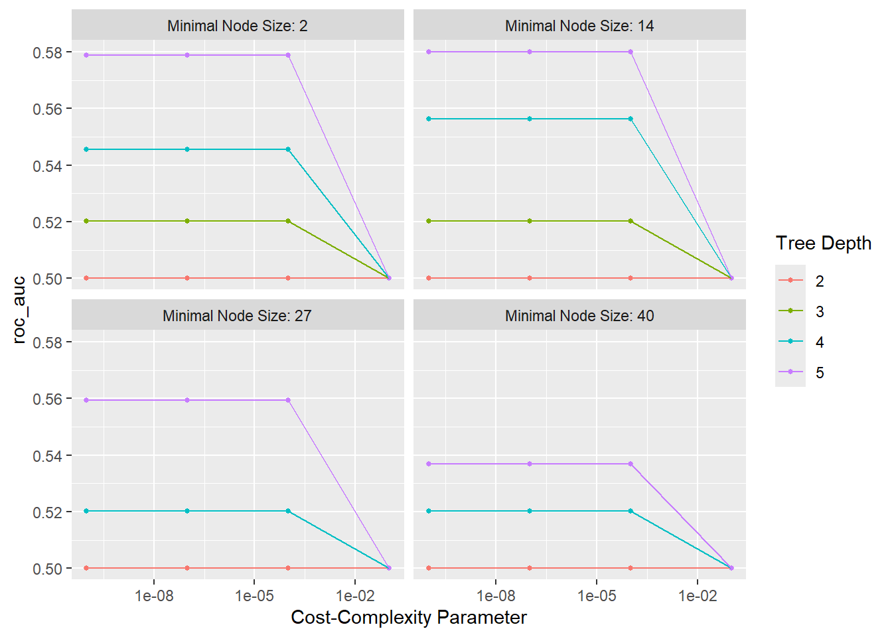
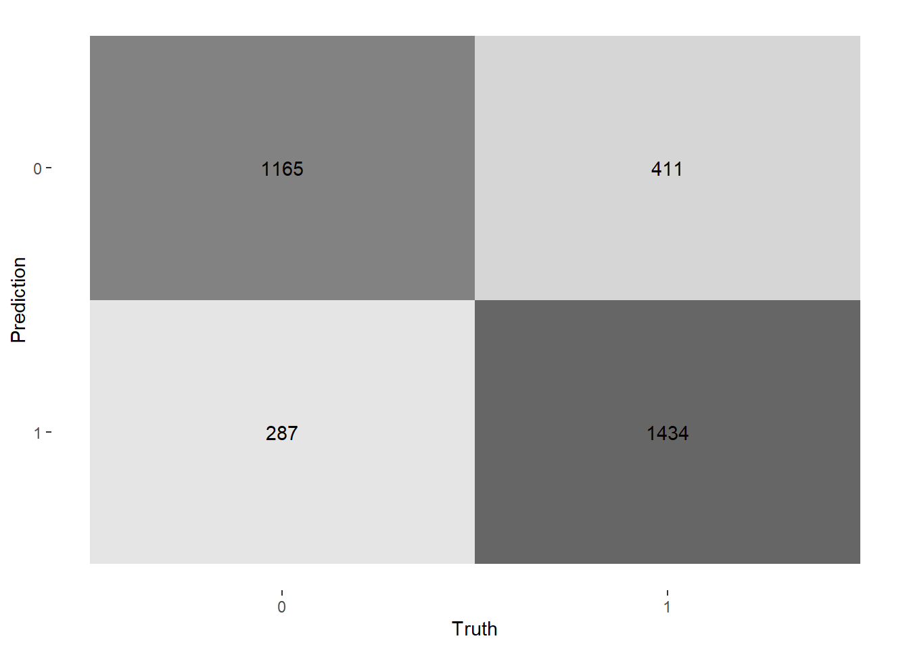
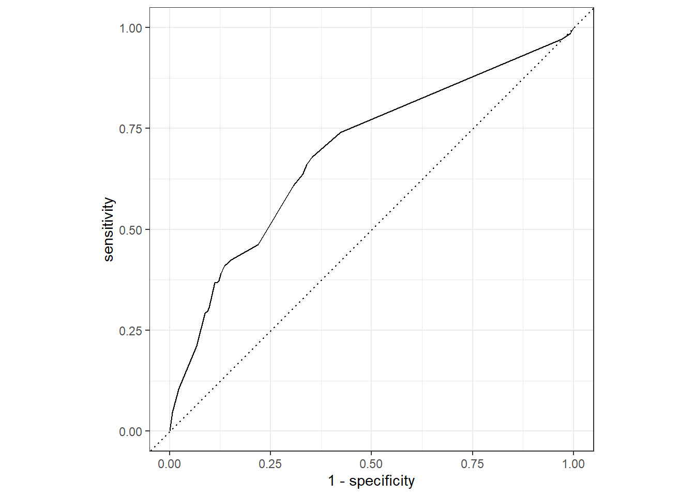
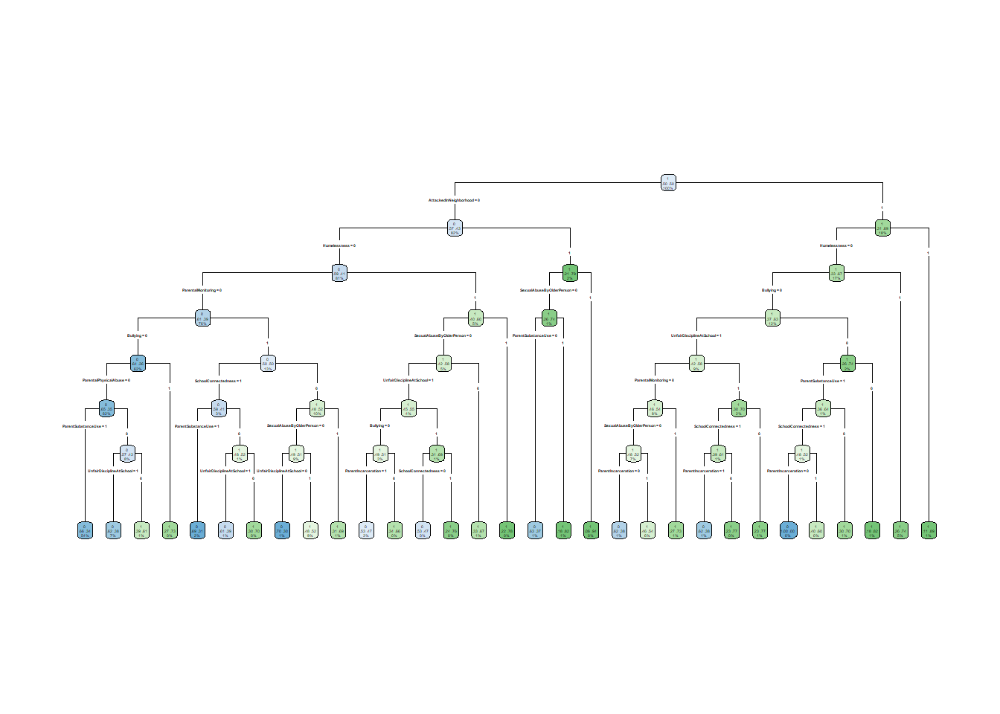
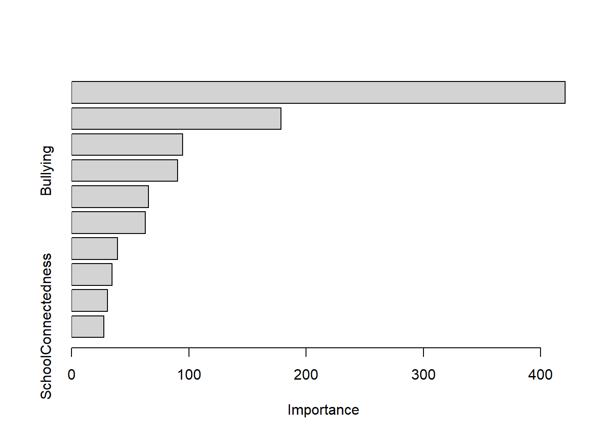

library(tidyverse)
library(tidymodels)
library(MLearnYRBSS)
library(janitor)
library(skimr)
library(vip)
library(here)
library(rpart.plot)Decision Trees
In this note, we check whether a decision tree can predict whether a teen carries a weapon to school.
Setup
Like before we load the packages necessary for the analysis.
And we load the data from before!
analysis_split <- readRDS(here("models", "data", "analysis_split.rds"))
analysis_data <- readRDS(here("models", "data", "analysis_data.rds"))
analysis_train <- readRDS(here("models", "data", "analysis_train.rds"))
analysis_test <- readRDS(here("models","data", "analysis_test.rds"))Except this time, we use define analysis_folds with v = 10 folds, meaning every candidate tree we try will be evaluated on all 10 — the test set stays untouched until the very end. Further, explicitly specify strata = WeaponCarryingSchool:
analysis_folds <- vfold_cv(analysis_train, v = 10, strata = WeaponCarryingSchool)
analysis_folds# 10-fold cross-validation using stratification
# A tibble: 10 × 2
splits id
<list> <chr>
1 <split [13226/1470]> Fold01
2 <split [13226/1470]> Fold02
3 <split [13226/1470]> Fold03
4 <split [13226/1470]> Fold04
5 <split [13226/1470]> Fold05
6 <split [13226/1470]> Fold06
7 <split [13227/1469]> Fold07
8 <split [13227/1469]> Fold08
9 <split [13227/1469]> Fold09
10 <split [13227/1469]> Fold10Sanity check: class balance
Before we continue, we need to check the class balances between the train and test sets:
analysis_train |>
tabyl(WeaponCarryingSchool) |>
adorn_pct_formatting(0) |>
adorn_totals() WeaponCarryingSchool n percent
0 14060 96%
1 636 4%
Total 14696 -analysis_test |>
tabyl(WeaponCarryingSchool) |>
adorn_pct_formatting(0) |>
adorn_totals() WeaponCarryingSchool n percent
0 4687 96%
1 212 4%
Total 4899 -Both sets show similar proportions, meaning strata = WeaponCarryingSchool did its job when we defined the train/test split previously.
Workflow
Recipe (preprocessing)
Trees don’t need fancy preprocessing: no step_normalize(), as trees only care about order, not scale; no step_dummy(), as rpart handles factor predictors natively; and imputation is still useful, since rpart can’t split on NA.
weapon_carry_recipe <-
recipe(formula = WeaponCarryingSchool ~ ., data = analysis_train) |>
step_impute_mode(all_nominal_predictors()) |>
step_impute_mean(all_numeric_predictors()) |>
step_zv(all_predictors()) |>
step_corr(all_numeric_predictors(), threshold = 0.7)
weapon_carry_recipe── Recipe ──────────────────────────────────────────────────────────────────────── Inputs Number of variables by roleoutcome: 1
predictor: 10── Operations • Mode imputation for: all_nominal_predictors()• Mean imputation for: all_numeric_predictors()• Zero variance filter on: all_predictors()• Correlation filter on: all_numeric_predictors()Specification
cart_spec <-
decision_tree(
cost_complexity = tune(), # ⬅️ tune
tree_depth = tune(), # ⬅️ tune
min_n = tune() # ⬅️ tune
) |>
set_engine("rpart") |>
set_mode("classification")
cart_specDecision Tree Model Specification (classification)
Main Arguments:
cost_complexity = tune()
tree_depth = tune()
min_n = tune()
Computational engine: rpart Workflow
Bundle it! This is the recipe and specification, neatly packaged.
cart_workflow <-
workflow() |>
add_recipe(weapon_carry_recipe) |>
add_model(cart_spec)
cart_workflow══ Workflow ════════════════════════════════════════════════════════════════════
Preprocessor: Recipe
Model: decision_tree()
── Preprocessor ────────────────────────────────────────────────────────────────
4 Recipe Steps
• step_impute_mode()
• step_impute_mean()
• step_zv()
• step_corr()
── Model ───────────────────────────────────────────────────────────────────────
Decision Tree Model Specification (classification)
Main Arguments:
cost_complexity = tune()
tree_depth = tune()
min_n = tune()
Computational engine: rpart Tree tuning
Tuning grid
We first set up the tuning grid. Note that levels can be set to 3 for faster turnaround.
tree_grid <- grid_regular(
cost_complexity(),
tree_depth(c(2, 5)),
min_n(),
levels = 4
)
tree_grid# A tibble: 64 × 3
cost_complexity tree_depth min_n
<dbl> <int> <int>
1 0.0000000001 2 2
2 0.0000001 2 2
3 0.0001 2 2
4 0.1 2 2
5 0.0000000001 3 2
6 0.0000001 3 2
7 0.0001 3 2
8 0.1 3 2
9 0.0000000001 4 2
10 0.0000001 4 2
# ℹ 54 more rowsRun the tuning
Note for those following along that this part can be slow, as there are:
- 4 × 4 × 4 = 64 candidates
- × 10 folds = 640 model fits
We’ll use doParallel to speed it up. Also, we use ROC AUC as the tuning metric — robust to class imbalance, and the same one we used for Lasso.
doParallel::registerDoParallel()
cart_tune <-
cart_workflow |>
tune_grid(
resamples = analysis_folds,
grid = tree_grid,
metrics = metric_set(roc_auc),
control = control_grid(save_pred = TRUE)
)
doParallel::stopImplicitCluster()Show the best candidates
The top 5 hyperparameter combos, ranked by mean ROC AUC across the 10 folds.
show_best(cart_tune, metric = "roc_auc")# A tibble: 5 × 9
cost_complexity tree_depth min_n .metric .estimator mean n std_err
<dbl> <int> <int> <chr> <chr> <dbl> <int> <dbl>
1 0.0000000001 5 14 roc_auc binary 0.580 10 0.0179
2 0.0000001 5 14 roc_auc binary 0.580 10 0.0179
3 0.0001 5 14 roc_auc binary 0.580 10 0.0179
4 0.0000000001 5 2 roc_auc binary 0.579 10 0.0173
5 0.0000001 5 2 roc_auc binary 0.579 10 0.0173
# ℹ 1 more variable: .config <chr>Visualize the tuning results
In this visualization, each panel shows how the metric changes as one knob varies — colored by the others. We look for the sweet spot.
autoplot(cart_tune)
Picking the best combination
We select one row as the winner candidate:
best_cart <- select_best(cart_tune, metric = "roc_auc")
best_cart# A tibble: 1 × 4
cost_complexity tree_depth min_n .config
<dbl> <int> <int> <chr>
1 0.0000000001 5 14 pre0_mod14_post0But we don’t commit yet: we want to check how this performs first.
How does our chosen candidate actually do?
Here, we get an honest, CV-estimated performance for our single chosen combo.
cart_workflow |>
finalize_workflow(best_cart) |>
fit_resamples(resamples = analysis_folds) |>
collect_metrics()# A tibble: 3 × 6
.metric .estimator mean n std_err .config
<chr> <chr> <dbl> <int> <dbl> <chr>
1 accuracy binary 0.956 10 0.000833 pre0_mod0_post0
2 brier_class binary 0.0411 10 0.000781 pre0_mod0_post0
3 roc_auc binary 0.580 10 0.0179 pre0_mod0_post0Looks good, time to lock it in.
cart_final_wf <- finalize_workflow(cart_workflow, best_cart)
cart_final_wf══ Workflow ════════════════════════════════════════════════════════════════════
Preprocessor: Recipe
Model: decision_tree()
── Preprocessor ────────────────────────────────────────────────────────────────
4 Recipe Steps
• step_impute_mode()
• step_impute_mean()
• step_zv()
• step_corr()
── Model ───────────────────────────────────────────────────────────────────────
Decision Tree Model Specification (classification)
Main Arguments:
cost_complexity = 1e-10
tree_depth = 5
min_n = 14
Computational engine: rpart finalize_workflow() swaps the tune() placeholders for the actual best values. Now we’re committed.
Evaluate on the Test Set
We use last_fit() to fit all training data to predit on the test set. It computes metrics once, and honestly, with no accidental cheating possible.
cart_last_fit <-
last_fit(
cart_final_wf,
split = analysis_split,
metrics = metric_set(accuracy, kap, roc_auc, sensitivity, specificity)
)
cart_last_fit# Resampling results
# Manual resampling
# A tibble: 1 × 6
splits id .metrics .notes .predictions .workflow
<list> <chr> <list> <list> <list> <list>
1 <split [14696/4899]> train/test spl… <tibble> <tibble> <tibble> <workflow>Test-set metrics
Finally, we obtain our metrics:
collect_metrics(cart_last_fit)# A tibble: 5 × 4
.metric .estimator .estimate .config
<chr> <chr> <dbl> <chr>
1 accuracy binary 0.956 pre0_mod0_post0
2 kap binary 0.00724 pre0_mod0_post0
3 sensitivity binary 0.999 pre0_mod0_post0
4 specificity binary 0.00472 pre0_mod0_post0
5 roc_auc binary 0.537 pre0_mod0_post0Comparing these to the CV metrics from the sanity-check section, we see they are in about the same ballpark. Thus, the model generalizes.
Test-set predictions
tree_pred <-
cart_last_fit |>
collect_predictions() |>
select(WeaponCarryingSchool, .pred_class, .pred_1, .pred_0)
tree_pred# A tibble: 4,899 × 4
WeaponCarryingSchool .pred_class .pred_1 .pred_0
<fct> <fct> <dbl> <dbl>
1 0 0 0.0396 0.960
2 0 0 0.0396 0.960
3 0 0 0.0396 0.960
4 0 0 0.0396 0.960
5 0 0 0.0396 0.960
6 0 0 0.0396 0.960
7 0 0 0.0396 0.960
8 1 0 0.132 0.868
9 0 0 0.0396 0.960
10 0 0 0.0396 0.960
# ℹ 4,889 more rowsConfusion Matrix
tree_pred |>
conf_mat(truth = WeaponCarryingSchool, estimate = .pred_class) |>
autoplot(type = "heatmap")
ROC curve on the test set
tree_pred |>
roc_curve(truth = WeaponCarryingSchool, .pred_1, event_level = "second") |>
autoplot()
We see the ROC curve hugs the top-left corner, which is excellent and means the model is not randomly guessing.
Visualizing the final tree
This is the superpower of trees: it is a model your collaborator (or PI, or grandma) can read without a stats degree.
cart_last_fit |>
extract_fit_engine() |>
rpart.plot(roundint = FALSE, type = 4, extra = 104)
Variable importance with vip
Each bar in the variable importance plot (VIP) indicates how much that predictor reduced impurity across all splits. Predictors not shown were never useful enough to make the tree. This makes for a free feature ranking for your manuscript.
cart_last_fit |>
extract_fit_parsnip() |>
vip(num_features = 15)